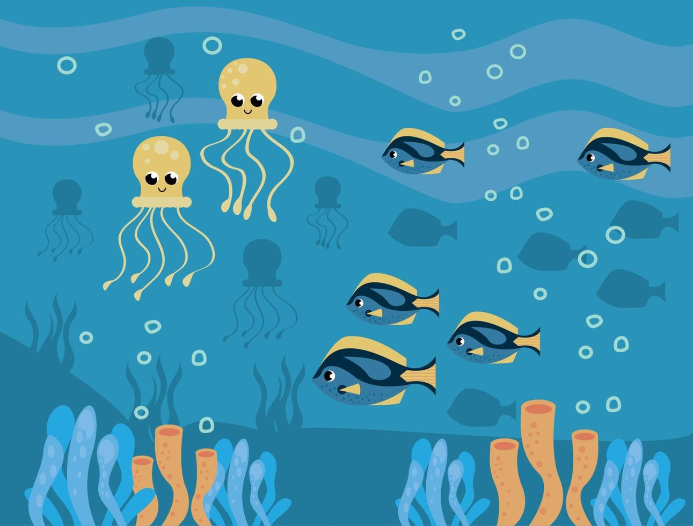
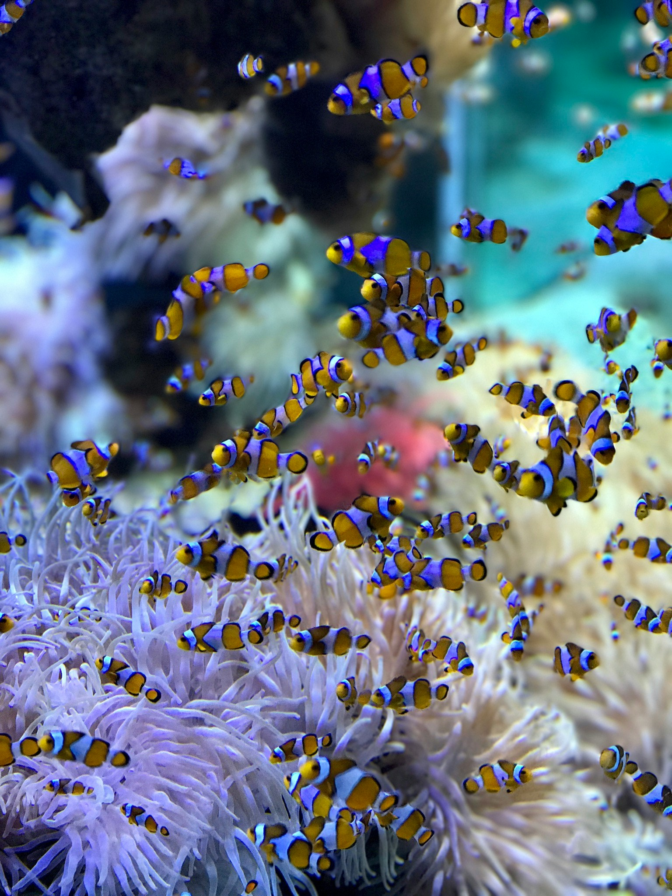

Segredos Escamados
O Maravilhoso Reino dos Peixes: Uma Aventura Subaquática!

Imaginem um mundo mágico e cheio de cores, onde criaturas incríveis nadam livresmente em um líquido azul brilhante. Esse é o reino dos peixes, um lugar cheio de mistérios e aventuras para serem exploradas!
Nesse reino, encontramos peixes de todos os tipos e tamanhos: desde pequeninos peixinhos coloridos até gigantes tubarões que nadam pelos mares mais profundos. Cada um com seu jeito único de nadar, se alimentar e viver.
Características gerais dos peixes
Escamas: Imagine um traje espacial que te protege e te ajuda a deslizar na água! É assim que
funcionam as escamas dos peixes. Elas são como pequenas armaduras que os protegem de predadores e doenças, além
de facilitar a locomoção na água.
Nadadeiras: Remos, hélices, asas... as nadadeiras dos peixes são como ferramentas multiuso!
Elas servem para nadar, frear, girar, subir, descer, e até mesmo se equilibrar. Cada tipo de nadadeira tem uma
função especial, sabia?
Cauda: Essa parte poderosa é como um motor para os peixes! Com um movimento forte da cauda,
eles podem impulsionar-se na água a grandes velocidades. É como se fosse um leme, direcionando-os para onde
querem ir.
Respirando pela Água: Brânquias: Diferente de nós, que respiramos ar, os peixes respiram água!
Através das brânquias, que são como esponjas cheias de vasos sanguíneos, eles capturam o oxigênio dissolvido na
água e liberam o gás carbônico.
Alguns peixes, como os peixinhos-palhaço, vivem entre os tentáculos das anêmonas, que os protegem de predadores. Já outros, como os peixes-boi, são tão grandes que parecem bois marinhos!No reino dos peixes, há também corais coloridos que formam recifes incríveis, como verdadeiras cidades subaquáticas. Nesses recifes, encontramos peixes de todos os tipos, que se escondem em buracos e nadam entre os corais.
Curiosidades ...
Lembranças Duradouras: Os peixes possuem memória muito melhor do que se imagina! Eles podem se lembrar de rotas,
locais de alimentação, predadores e até mesmo de rostos humanos. Estudos científicos comprovam que algumas
espécies conseguem evitar anzóis até um ano depois de serem pescadas!
Eletrorecepção: Incrível, mas verdade! Alguns peixes, como tubarões e enguias, possuem um sexto sentido: a
eletrorecepção. Essa habilidade
permite que eles detectem campos elétricos fracos emitidos por outros animais, o que os auxilia na caça e na
navegação.
Peixes que Vivem nas Profundezas: Nas profundezas dos oceanos, onde a luz solar não chega, vivem
peixes com características bizarras. Alguns são bioluminescentes, emitindo sua própria luz, enquanto outros
possuem corpos gelatinosos e olhos grandes para enxergar no escuro.